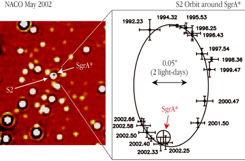
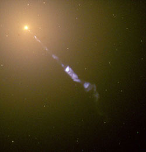

Supermassive black holes contain between one hundred thousand and ten billion times more mass than our Sun. As of 2022, there are over 150 confirmed supermassive black holes in our local Universe (with direct mass measurements). They typically exist at the centre of large galaxies, including the centre of our own galaxy, the Milky Way.

Credit: ESO
For many years, astronomers in the 1900s had only indirect evidence for supermassive black holes, the most compelling of which was the existence of quasars in remote active galaxies. Observations of the energy output and variability timescales of quasars revealed that they radiate over a trillion times as much energy as our Sun from a region about the size of the Solar System. The only mechanism capable of producing such enormous amounts of energy is the conversion of gravitational energy into light by a massive black hole.
More recently, direct evidence for the existence of supermassive black holes has come from observations of material, at the centres of galaxies, rapidly orbiting unseen mass. The high orbital velocities of these stars and gas are easily explained if they are being accelerated by a massive object with a strong gravitational field that is contained within a small region of space – i.e., a supermassive black hole.
While many ideas abound, astronomers are still not sure how these supermassive black holes form. Stellar black holes result from the collapse of massive stars, and some have suggested that supermassive black holes form out of the collapse of massive clouds of gas during the early stages of the formation of the galaxy. Another idea is that a stellar black hole consumes enormous amounts of material over millions of years, growing to supermassive black hole proportions. Yet another, is that a cluster of stellar black holes form and eventually merge into a supermassive black hole. It’s plausible that more than idea is correct.

Credit: NASA/GSFC
Whatever their formation mechanism, most astronomers agree that accretion of material toward the supermassive black hole drives both active galactic nuclei and launches galactic jets.